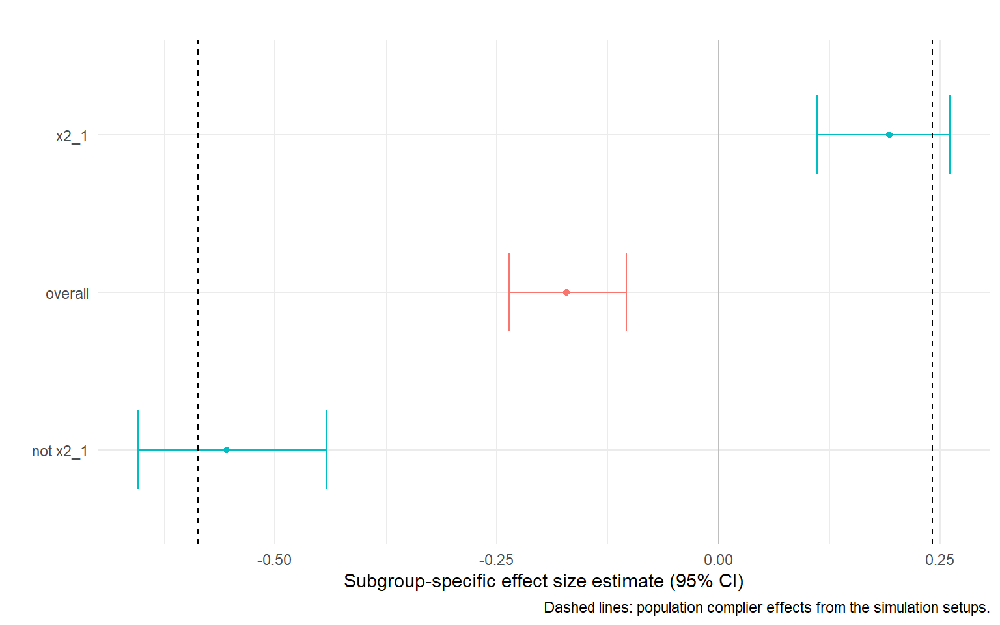
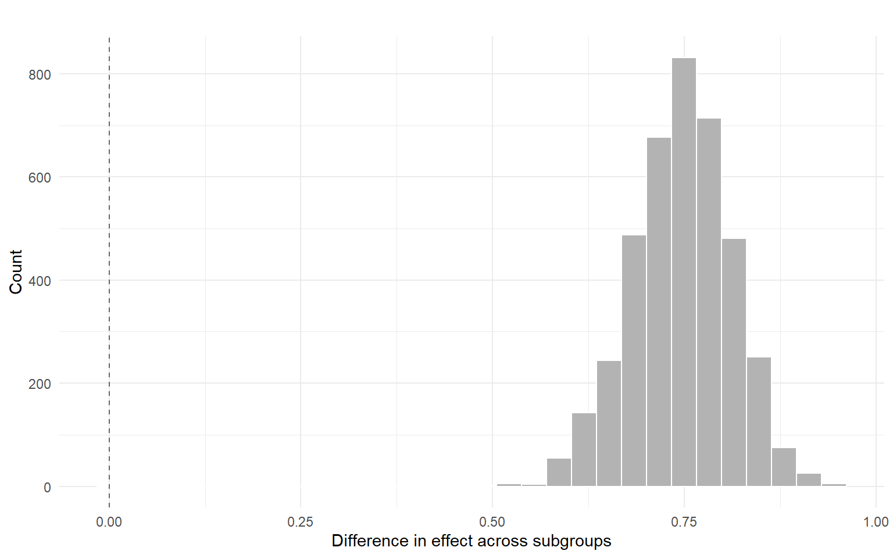

set.seed(1)
simdata <- ps_sim_data(n = 800, seed = 11)
head(simdata$data, 5)
#> x1_1 x2_1 Z W Y
#> 1 -0.59103110 1 0 1 1
#> 2 0.02659437 1 1 1 1
#> 3 -1.51655310 1 1 1 0
#> 4 -1.36265335 0 0 1 1
#> 5 1.17848916 0 1 1 1Introduction to princeBART
Overview
princeBART implements principal stratification with Bayesian Additive Regression Trees (BART). It estimates treatment effects for compliers: units whose treatment uptake changes in response to an instrument. See the background for an introduction to principal stratification and BART.
The framework uses an instrument Z, received treatment W, outcome Y, and covariates X. The instrument may be randomized assignment or an encouragement to take treatment. Covariates can affect assignment, uptake, and outcomes; unobserved variables U may affect uptake and outcomes.
Setup and assumptions
The binary model has three principal strata under monotonicity:
| Stratum | W(0) | W(1) |
|---|---|---|
| Compliers | 0 | 1 |
| Never-takers | 0 | 0 |
| Always-takers | 1 | 1 |
Here W(z) is uptake under assignment z. Defiers, with W(0) = 1 and W(1) = 0, are excluded. The current fitter requires a binary outcome; uptake can be binary or count/ordinal.
The identifying assumptions are:
- Conditional randomization: assignment is independent of potential outcomes and uptake given X.
- Exclusion: Z affects Y only through received treatment W.
- Monotonicity: W(1) >= W(0) in the binary model.
- Overlap and relevance: both assignment arms are possible given X, and assignment changes uptake for some units.
Writing Y(w) for the potential outcome under received treatment w, the conditional complier effect is
\[ \mathrm{CATE}_C(x) = E[Y(1)-Y(0)\mid W(0)=0,\ W(1)=1,\ X=x]. \]
For binary outcomes, this is a difference in outcome probabilities. Averaging it over the covariate distribution of compliers gives the complier average causal effect (CACE), also called the local average treatment effect (LATE).
Simulated example data
The built-in simulator separates a reusable setup from data generation. Random coefficients use the caller’s RNG; the setup’s seed controls the data.
By default, \(X_1\) and \(U\) are independent \(N(0,1)\) variables, and \(X_2\) is an independent Bernoulli(0.5) variable. Let \(\widetilde X = (1, X_1, X_2)\) and \(\operatorname{expit}(t) = 1/(1+\exp(-t))\). The generator uses
\[ \begin{aligned} P(G=g\mid X,U) &\propto \exp(\widetilde X^\top\alpha_g+\gamma_g U), \quad g\in\{(0,0),(0,1),(1,1)\},\\ Z\mid X &\sim \mathrm{Bernoulli}\{\operatorname{expit}(\widetilde X^\top\beta)\},\\ W &=(1-Z)W(0)+ZW(1),\\ Y\mid X,U,G,W &\sim \mathrm{Bernoulli}\{ \operatorname{expit}(\widetilde X^\top\theta_G+\delta_G U+\tau_G W)\}. \end{aligned} \]
Coefficients are drawn once from \(N(0,1)\). The coefficient \(\tau_G\) is a treatment effect on the log-odds scale; it is not itself a probability difference. For other covariate distributions, transformations, and fixed coefficients, see Simulation.
The simulator returns:
data: observed covariates, Z, W, and Y.alldata: also includes transformed covariates, the true stratum G, unobserved U, potential uptake W0/W1, assignment propensity, and conditional outcome meansmean_y0/mean_y1under Z = 0/1.setup: all settings, fixed coefficients, and the stratum weight matrix. Its rows index W(0), columns index W(1); zeros exclude strata.
head(simdata$alldata[c("G", "U", "W0", "W1", "propensity",
"mean_y0", "mean_y1")], 5)
#> G U W0 W1 propensity mean_y0 mean_y1
#> 1 (1,1) -2.0770948 1 1 0.5614858 0.9958712 0.9958712
#> 2 (0,1) 0.8770231 0 1 0.6963828 0.7597660 0.7487739
#> 3 (0,1) 2.5416724 0 1 0.3483394 0.7592268 0.7482182
#> 4 (1,1) 0.3910606 1 1 0.2137762 0.7002255 0.7002255
#> 5 (1,1) 0.3898716 1 1 0.7495306 0.6116161 0.6116161Basic usage and comparison with 2SLS
The formula is Y ~ covariates | Z | W.
plan(multisession, workers = 4)
set.seed(12)
fit <- prince_BART(
Y ~ x1_1 + x2_1 | Z | W,
data = simdata$data,
n_chains = 4, n_warmup = 500, n_samples = 1000
)
summary(fit)
#> Principal Stratification BART Summary (Binary Uptake)
#> =====================================================
#>
#> Principal Strata Distribution:
#> variable mean median sd mad q5 q95
#> 1 compliers 0.1841569 0.1842059 0.03348219 0.03435619 0.12906454 0.2387539
#> 2 never-takers 0.1236414 0.1231910 0.01526135 0.01535347 0.09886501 0.1494172
#> 3 always-takers 0.6922018 0.6919418 0.03069129 0.03050993 0.64178561 0.7430098
#> rhat ess_bulk ess_tail
#> 1 1.010749 223.1143 423.8690
#> 2 1.005850 600.6785 1856.8340
#> 3 1.007718 270.3662 547.4349
#>
#> Mixed ATE for Compliers:
#> variable mean median sd mad
#> 1 Y(0) | compliers 0.64214316 0.64343560 0.11564953 0.11805101
#> 2 Y(1) | compliers 0.62371119 0.62979692 0.12333564 0.11553165
#> 3 Y(0) | never-takers 0.54094200 0.54323799 0.06361649 0.06288094
#> 4 Y(1) | always-takers 0.80938080 0.81015484 0.02393912 0.02377839
#> 5 Mixed ATE for compliers -0.01843197 -0.01080168 0.17603896 0.17216859
#> q5 q95 rhat ess_bulk ess_tail
#> 1 0.4513988 0.8328151 1.004152 747.9988 1013.7548
#> 2 0.4063892 0.8185109 1.016979 195.5149 386.4644
#> 3 0.4345827 0.6419575 1.002077 939.4162 1771.7070
#> 4 0.7687105 0.8476653 1.010884 242.6821 804.0651
#> 5 -0.3162614 0.2617772 1.010870 232.5831 522.0651The default summary reports mixed average effects for compliers. Other estimands are available through extract(), for example extract(fit, "sate_c") for sample effects; see ?extract for definitions. The simulation supplies a reference by averaging conditional mean differences among the true compliers:
truth <- simdata$alldata
is_complier <- truth$W0 == 0 & truth$W1 == 1
true_sate_c <- mean((truth$mean_y1 - truth$mean_y0)[is_complier])This reference averages conditional means for the realized simulated compliers. It is not the realized difference of two binary potential outcomes, which the simulator does not return.
Use ivreg for 2SLS, with an HC1 robust, normal-approximation 95% confidence interval. Include the covariates on both sides of the IV formula.
fit_2sls <- ivreg(Y ~ W + x1_1 + x2_1 | Z + x1_1 + x2_1,
data = simdata$data)
tsls_estimate <- unname(coef(fit_2sls)["W"])
tsls_se <- sqrt(vcovHC(fit_2sls, type = "HC1")["W", "W"])
tsls_ci <- tsls_estimate + qnorm(c(0.025, 0.975)) * tsls_se
bart_draws <- mixed_effect_draws(fit)
bart_ci <- quantile(bart_draws, c(0.025, 0.975), names = FALSE)
comparison <- data.frame(
Method = c("Simulation reference", "princeBART: mixed complier effect", "2SLS"),
Estimate = c(true_sate_c, mean(bart_draws), tsls_estimate),
Lower = c(NA, bart_ci[1], tsls_ci[1]),
Upper = c(NA, bart_ci[2], tsls_ci[2]),
Interval = c("Reference", "95% credible", "95% confidence")
)
knitr::kable(comparison, digits = 3)| Method | Estimate | Lower | Upper | Interval |
|---|---|---|---|---|
| Simulation reference | -0.012 | NA | NA | Reference |
| princeBART: mixed complier effect | -0.018 | -0.387 | 0.307 | 95% credible |
| 2SLS | -0.116 | -0.510 | 0.278 | 95% confidence |
All estimates are probability differences. Agreement is not guaranteed: logistic outcome models imply heterogeneous probability differences, and 2SLS and mixed complier averages can weight those effects differently. These Wald confidence intervals also rely on adequate instrument strength.
Segment heterogeneity
The two populations share the same X1 distribution. X2 is always 0 in sim1 and always 1 in sim2. They share all coefficients except the complier treatment coefficient: -3 for X2 = 0 and +3 for X2 = 1. These are log-odds coefficients; the probability-scale effects also depend on the baseline outcome model. The model receives X1 and X2 and must learn the split itself.
set.seed(100) # Fix the shared coefficients independently of earlier fits.
sim1 <- ps_sim_setup(
n = 600, x1_mean = 0, x1_var = 0.5, x2_p = 0,
seed = 101,
stratum_weights = matrix(c(1, 0, 8, 1), 2, 2)
)
sim1$coefficients$y_w[1, 2] <- -3
sim2 <- sim1
sim2$x2_p <- 1
sim2$seed <- 102
sim2$coefficients$y_w[1, 2] <- 3
simdata1 <- ps_sim_data(sim1)
simdata2 <- ps_sim_data(sim2)
data_combined <- rbind(simdata1$data, simdata2$data)Approximate each population’s true complier effect using a large reference simulation from its setup. Average the known conditional mean differences among true compliers; no fitted model enters this Monte Carlo reference.
segment_truth <- vapply(list(sim1, sim2), function(setup) {
setup$n <- 100000L
setup$seed <- 104
reference <- ps_sim_data(setup)$alldata
with(reference, mean((mean_y1 - mean_y0)[W0 == 0 & W1 == 1]))
}, numeric(1))
names(segment_truth) <- c("0", "1")set.seed(103)
fit_sh <- prince_BART(
Y ~ x1_1 + x2_1 | Z | W,
data = data_combined,
propensity = c(simdata1$alldata$propensity, simdata2$alldata$propensity),
n_chains = 4, n_warmup = 500, n_samples = 1000,
n_trees = 50, keep_trees = TRUE
)Fit a tree with at most two leaves, allowing it to choose between X1 and X2. The cross-tabulation checks group recovery. For segments containing only one X2 value, compare the posterior effect and 95% credible interval with that population’s simulation truth. A mixed segment has no matched group truth and is marked NA.
res <- segment_heterogeneity(
fit_sh,
rpart_control = rpart::rpart.control(cp = 0, maxdepth = 1),
min_compliers_bucket = 100, ci_level = 0.95,
plot = TRUE, contrast = TRUE
)
recovery <- table(X2 = data_combined$x2_1, Segment = res$segment_data$segment)
recovery
#> Segment
#> X2 not x2_1 x2_1
#> 0 600 0
#> 1 0 600
cat("Both X2 groups recovered:",
ncol(recovery) == 2L && all(colSums(recovery > 0) == 1L), "\n")
#> Both X2 groups recovered: TRUE
effects <- res$effects[res$effects$segment != "overall", ]
x2_group <- vapply(effects$segment, function(segment) {
values <- unique(data_combined$x2_1[res$segment_data$segment == segment])
if (length(values) == 1L) values else NA_real_
}, numeric(1))
comparison <- data.frame(
Segment = effects$segment, X2 = x2_group,
Truth_MC = unname(segment_truth[as.character(x2_group)]),
Estimate = effects$mean, Lower = effects$ci_lower, Upper = effects$ci_upper
)
comparison$Truth_in_interval <- with(comparison, Truth_MC >= Lower & Truth_MC <= Upper)
knitr::kable(comparison, digits = 3)| Segment | X2 | Truth_MC | Estimate | Lower | Upper | Truth_in_interval | |
|---|---|---|---|---|---|---|---|
| not x2_1 | not x2_1 | 0 | -0.586 | -0.554 | -0.654 | -0.443 | TRUE |
| x2_1 | x2_1 | 1 | 0.241 | 0.192 | 0.111 | 0.260 | TRUE |
res$plot$effect +
ggplot2::geom_vline(xintercept = unname(segment_truth), linetype = 2) +
ggplot2::labs(caption = "Dashed lines: population complier effects from the simulation setups.")
res$contrast$summary
#> mean sd ci_lower ci_upper p_gt0
#> 1 0.7465464 0.06407866 0.6161104 0.8654216 1
res$plot$diff
Generalizing to a target population
Reuse the source fit above, whose trees were saved with keep_trees = TRUE. Now draw 80% of the target from the X2 = 0 population and 20% from the X2 = 1 population, rather than the source’s 50/50 mix. Each population keeps its simulation setup, and both covariate distributions are represented in the source.
target_low <- sim1
target_low$n <- 800
target_low$seed <- 201
target_high <- sim2
target_high$n <- 200
target_high$seed <- 202
sim_target_low <- ps_sim_data(target_low)
sim_target_high <- ps_sim_data(target_high)
target_data <- rbind(sim_target_low$data, sim_target_high$data)
target_covariates <- target_data[c("x1_1", "x2_1")]general_BART() averages the predicted complier effect curve over the target covariates:
\[ \tau_{\mathrm{target}} = \frac{1}{n_T}\sum_{j=1}^{n_T}\mathrm{CATE}_C(X_j). \]
The references below average known conditional outcome-mean differences among the simulated compliers. Complier membership depends on covariates in this simulation, so these references use different weighting from general_BART() and need not agree with it. Only target covariates enter prediction; target outcomes and true strata are used only for simulation checks. With no survey weights supplied, target units receive equal weight; the 95% credible interval incorporates a Bayesian bootstrap over units.
transported <- general_BART(
princebart_fit = fit_sh,
newdata = target_covariates,
n_cores = 4, seed = 203
)
# Simulation references: average conditional mean differences among true compliers.
source_reference <- with(rbind(simdata1$alldata, simdata2$alldata),
mean((mean_y1 - mean_y0)[W0 == 0 & W1 == 1]))
target_reference <- with(rbind(sim_target_low$alldata, sim_target_high$alldata),
mean((mean_y1 - mean_y0)[W0 == 0 & W1 == 1]))
source_draws <- mixed_effect_draws(fit_sh)
source_ci <- quantile(source_draws, c(0.025, 0.975), names = FALSE)
transport_comparison <- data.frame(
Method = c("Source: simulated compliers", "Source: princeBART mixed effect",
"Target: simulated compliers", "Target: general_BART"),
Estimate = c(source_reference, mean(source_draws), target_reference, transported$pate),
Lower = c(NA, source_ci[1], NA, transported$ci[1]),
Upper = c(NA, source_ci[2], NA, transported$ci[2])
)
knitr::kable(transport_comparison, digits = 3)| Method | Estimate | Lower | Upper |
|---|---|---|---|
| Source: simulated compliers | -0.160 | NA | NA |
| Source: princeBART mixed effect | -0.171 | -0.236 | -0.104 |
| Target: simulated compliers | -0.412 | NA | NA |
| Target: general_BART | -0.312 | -0.651 | 0.102 |
Changing the X2 mix changes the target covariate distribution while preserving the conditional simulation models. Both X2 values occur in the source. Generalization requires stable conditional complier effects and covariate overlap. See ?general_BART for survey weights and target subpopulations.
Count and ordinal uptake
For count or ordinal W, the instrument Z remains binary. Principal strata are pairs G = (W(0), W(1)) = (a, b). The current ordinal model uses the opposite monotonicity direction to the binary model: b <= a, so assignment can reduce uptake.
Within a stratum, the assignment contrast is
\[ E[Y\mid Z=1,G=(a,b),X=x]-E[Y\mid Z=0,G=(a,b),X=x]. \]
Under exclusion, this compares uptake b with uptake a. The current ordinal summary focuses on units with W(0) - W(1) = 1. Fit this model using uptake_type = "ordinal"; see ?prince_BART for model options.